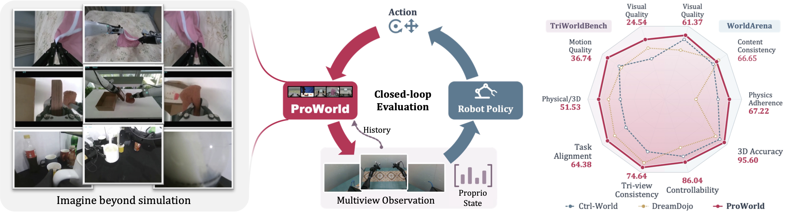
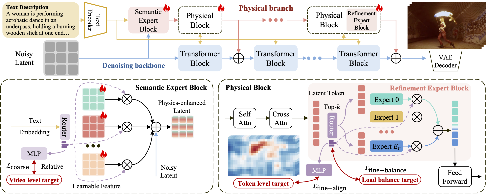
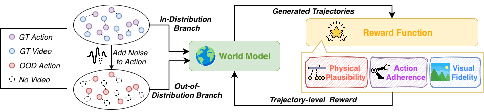
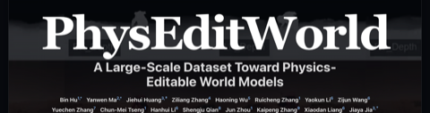

|
Zijun Wang
I'm a first-year Ph.D. student at Sun Yat-sen University and Pengcheng Laboratory, advised by Prof.
Xiaodan Liang. I received my Bachelor's degree from Sun Yat-sen University.
My research interests include video generation and embodied intelligence.
Email /
Github
|
|
Publications
|
First-authored
|
|

|
ProWorld: Multi-View World Model with Proprioceptive Feedback for
Closed-Loop Policy Evaluation
Zijun Wang, Tianyi Yan, Haokun Lin, Panwen Hu, Bohang He, Siyu Ren, Xiaoyu Guo,
Weijia Liufu, Shuoshuo Xue, Fengjiao Chen, Zipeng Ye, Xuezhi Cao, Zutao Jiang, Hanhui Li,
Xiaodan Liang
arXiv preprint, 2026
project page /
arXiv
|
|

|
ProPhy: Progressive Physical Alignment for Dynamic World Simulation
Zijun Wang, Panwen Hu, Jing Wang, Terry Jingchen Zhang, Yuhao Cheng, Long Chen,
YiQiang Yan, Zutao Jiang, Hanhui Li, Xiaodan Liang
CVPR, 2026 (Oral)
project page /
arXiv /
code
|
Co-authored
|
|

|
PAVXploreRL: Physical-Action-Visual World Model Reinforcement Learning
with Action Exploration
Han Wang, Zijun Wang, Shuoshuo Xue, Rui Cao, Fengjiao Cheng, Xiaodan Liang,
Roy Ka-Wei Lee
arXiv preprint, 2026
arXiv /
code
|
|

|
PhysEditWorld: A Large-Scale Dataset Toward Physics-Editable World
Models
Bin Hu, Yanwen Ma, Jiehui Huang, Ziliang Zhang, Haoning Wu, Ruicheng Zhang, Yaokun Li,
Zijun Wang, Yuechen Zhang, Chun-Mei Tseng, Hanhui Li, Shengju Qian, Jun Zhou,
Kaipeng Zhang, Xiaodan Liang, Jiaya Jia, Xiu Li
arXiv preprint, 2026
project page /
arXiv
|
|